Minu Merchant app, version 2 redesign
2023 to 2025
Minu Merchant is the app a Mongolian shop owner uses alongside their Minu POS terminal: accounts, cards, POS and SoftPOS statements, transfers, and ten kinds of business loan. Version one had grown to 312 screens. I mapped all of it into eight sections, built a token system on top, and rebuilt the first three sections, authentication, home, and account, as the pattern for the rest.1
A shop’s whole money life in one app
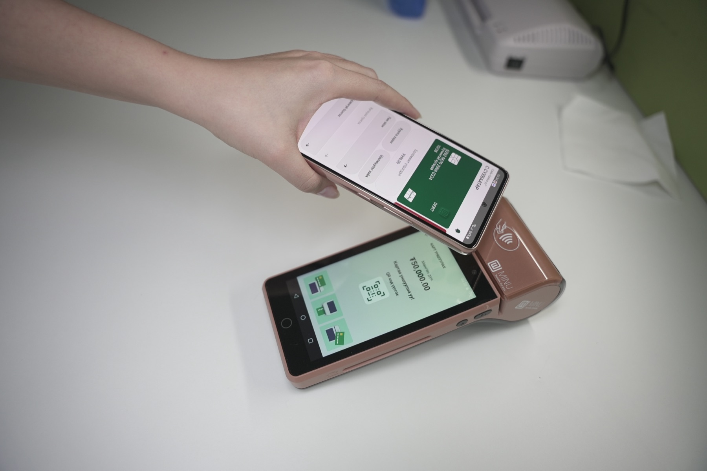
Taking payments is the smallest part of what a merchant on Minu does. They read yesterday’s POS statement, move money between their own accounts, order a debit or credit card, top up a working-capital loan, and, if they are small enough, take payments on their phone with SoftPOS instead of a terminal. Version one covered all of that, in Mongolian, across iOS and Android, and I had to know every corner of it before I could change any.
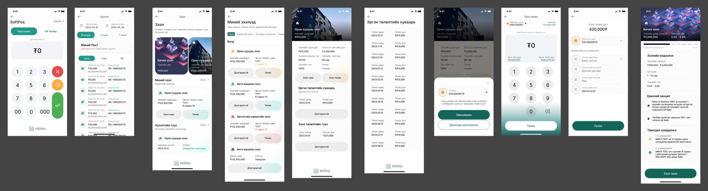
The loan area is where I understood the scale. Micro loans, consumer loans, mortgages, working capital, auto loans, POS leasing, investment loans, car-collateral and home-collateral loans, trade loans. Each had its own request flow, its own detail screen, its own repayment path. Cards had order, invoice, statement, PIN, deactivate, close and extend. By the time I sat down for version two there were 312 phone screens in the file and nothing that held them together.
Eight sections before a single screen
I started version two by refusing to draw. The first thing in the redesign area is a row of numbered section titles, and under each one the list of screens it would need. Some of those sections still have nothing under them but the list. I left them that way on purpose, because the map is the deliverable that makes the next designer’s week shorter.
- Authentication
- Splash, sign in, sign up, forgot password in five steps, verification in five states. Built.
- Home
- One screen: balance, two shortcuts, transactions, a slot for a chart or banner. Built.
- Account and transfer
- Account, statement in two versions plus empty state and calendar, transfer in three versions. Built.
- Wallet (card)
- Default, statement. Planned.
- POS
- Default, statement, info. Planned.
- SoftPOS
- Default, statement, void. Planned.
- User
- Security, biometrics, accessed devices log, user info, about with terms and Q&A, feedback with transaction dispute and issue reporting. Planned.
- Admin
- Role management and user registration, for shops with more than one person on the till. Planned.
Two of those sections did not exist in version one at all. An accessed-devices log and a transaction dispute path belong in any app that holds a business’s money, and an admin area with roles is what turns a one-owner app into one a shop with three cashiers can use. I put them on the map first so nobody could later call them scope creep.
A redesign that starts with screens produces prettier screens. One that starts with a map produces a product the team can finish without you.
A home screen that starts with the balance
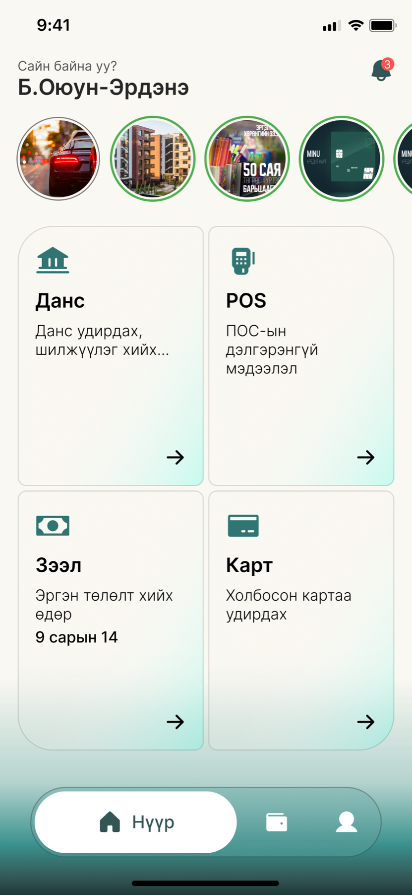
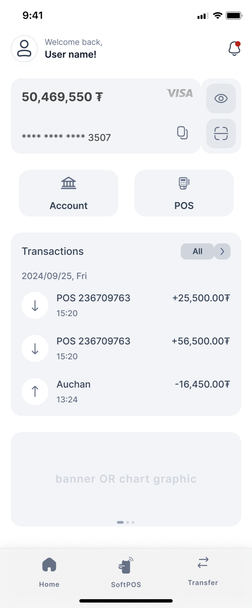
Version one’s home was a menu. Four tiles, a row of stories, a greeting, and no money on it anywhere. A merchant opening the app at closing time wants one number, and I made version two lead with it: available balance, the card it sits on, an eye to hide it when a customer is looking over the counter, and copy and scan buttons on the same card so paying in and paying out start from the balance itself.
I changed the tab bar too. Version one had home, wallet and profile. Version two has home, SoftPOS and transfer, because those are the two actions a merchant performs many times a day and the profile is something they open twice a year. SoftPOS in the centre is the product bet made visible: the phone is the terminal now.
The grey box at the bottom is labelled “banner or chart graphic” in my own hand. I left the question open rather than filling it, because the answer depends on what the business team wants that space to do, and a designer’s guess there costs a sprint.
Signing in, with every state drawn
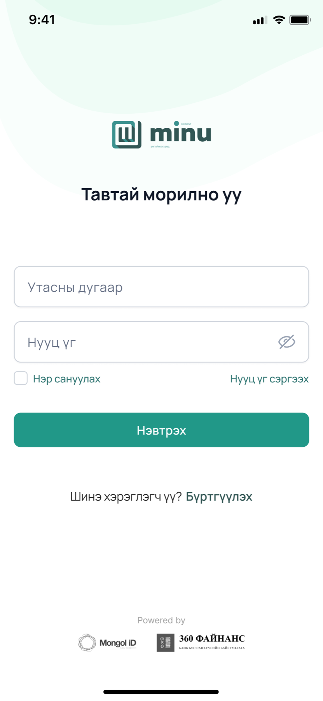
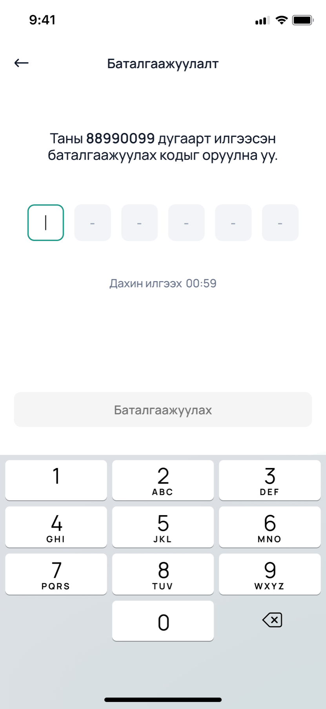
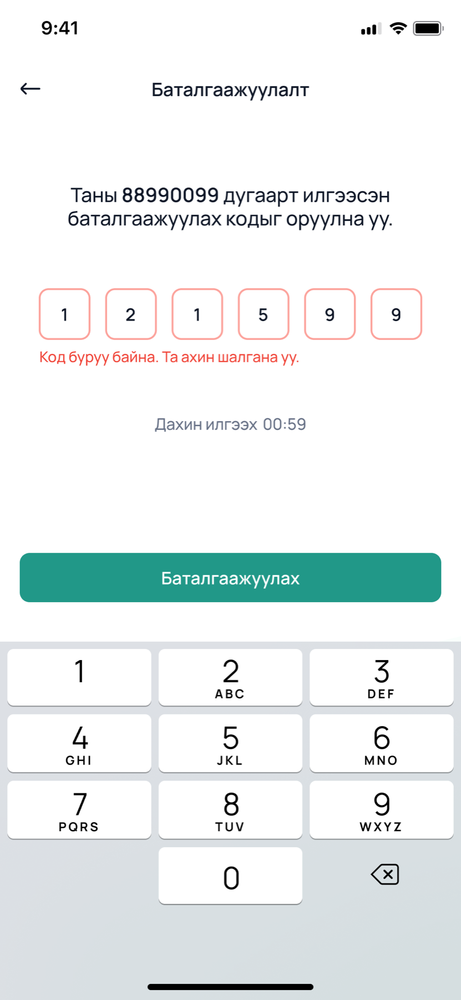
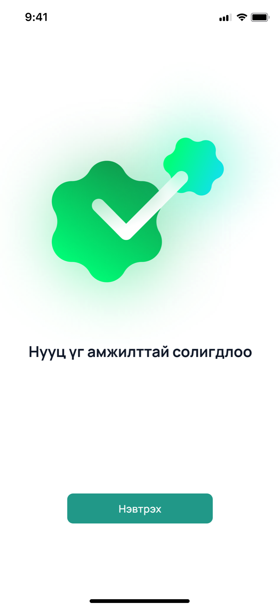
Authentication is where I set the rules everything else would follow, so I drew it completely. Verification alone has five frames: empty, filled, loading, resend, and error. Forgot password has five steps ending in a success screen that exists in two versions because I was not sure how much celebration a password change deserves. I settled on a little.
The Powered by line at the foot of sign in matters more than it looks. Mongol ID is the national identity provider and 360 Finance is the licensed lender behind the loans. A merchant handing over their phone number wants to know who is on the other end, and I wanted both names on the first screen rather than buried in terms.
Statements a shopkeeper can actually filter
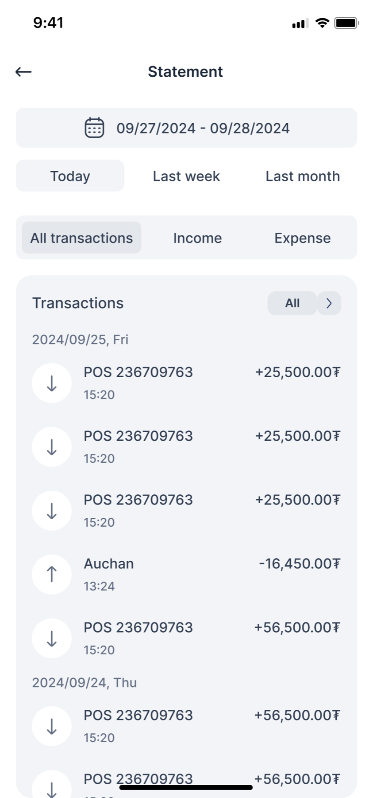
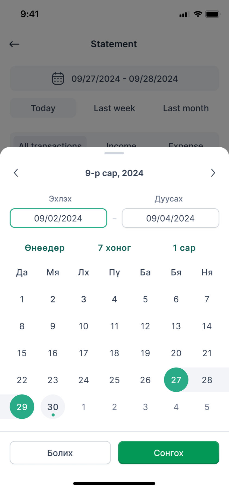
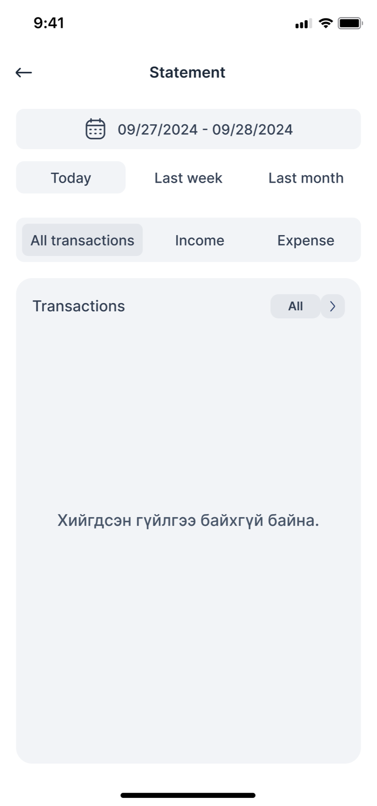
A merchant’s statement is a tax document and a daily sanity check at the same time, so I gave it two rows of filters. Period first, because “today” and “last month” cover most of what anyone asks. Direction second, income or expense, because reconciling a till means looking at one side at a time. The calendar sheet repeats the quick picks so nobody has to count days on a grid.
I took transfer through three versions. The recipient picker started as square tiles, became a scrolling row of bank marks with the Minu companion account first, and in the third pass I took the tab bar off the screen, because a transfer is a task with an end and the tab bar was an invitation to leave halfway through.
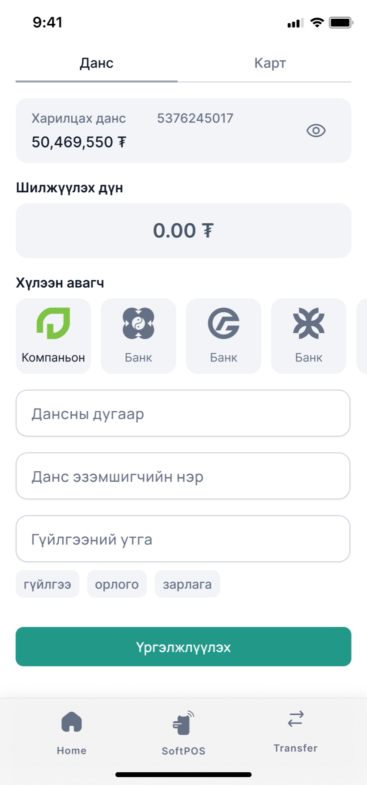
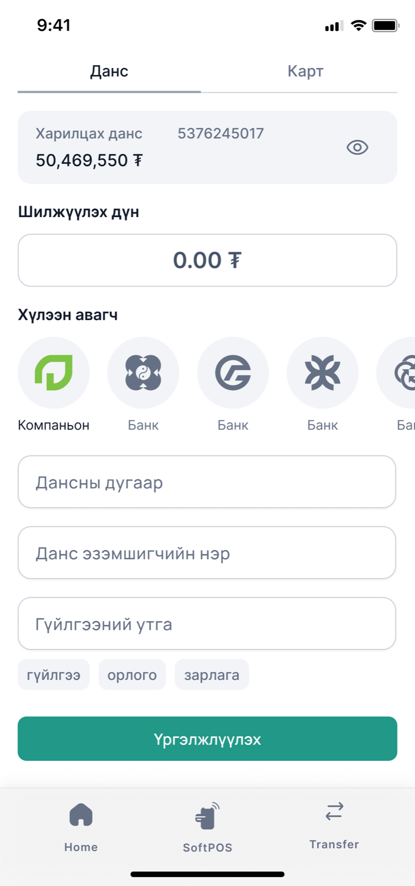
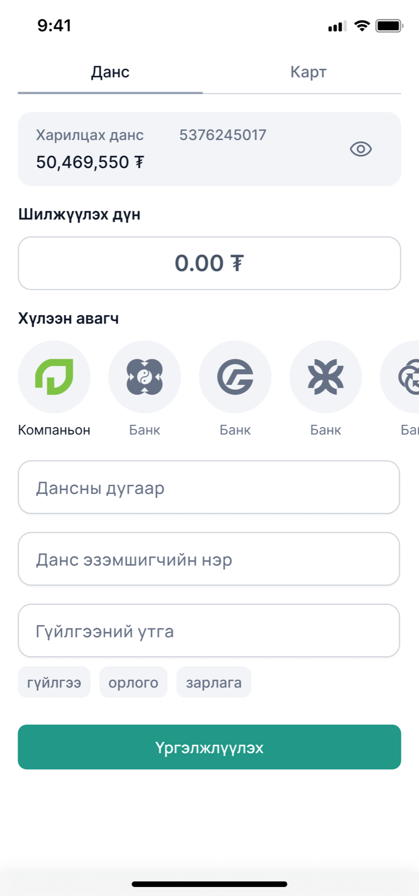
Tokens first, so the rest goes fast
Version one had a lovely teal gradient and no variables. Version two starts from tokens. I
set the brand greens as Minu/Primary/Green and Lightgreen, took the
grey, error and text scales from a published Untitled UI base so I would not invent a
fourteenth grey, and set type in Inter. Then I built the two components every screen would
need, with every state, before drawing screen four.
Primary, hover and disabled; outline, soft and ghost; a field at rest, focused, in error and disabled. Rebuilt here from the tokens, not screenshotted.
Brand tokens as named in the file
Green ramp ten steps, kept in the file as a strip of chips
I kept the ramp so charts, tags and the SoftPOS screens can lean greener or deeper without anyone picking a colour by eye. The disabled button is grey, not pale green, because a merchant should never wonder whether a payment button is loading or off.
Where it stands
Three of eight sections are built, and I chose them because they are the three every user passes through. The remaining five have their screen lists written and their component kit waiting. That is a deliberate order. Authentication set the rules, home set the tone, and account and transfer proved the kit could handle a dense, form-heavy flow. Wallet, POS and SoftPOS are variations on the statement pattern I have already drawn.
What I would want a hiring manager to take from this project is not the screens. It is that when I inherited 312 of them I did not start by redrawing the prettiest one. I counted them, named what they were for, found the two sections that were missing, and built the smallest set of pieces that would let anyone finish the rest.
- The counts come from the Figma file: 312 phone-sized frames in the version one area, and 24 built screens across the three completed version two sections, not counting component and title frames.
- The note reads, in Mongolian, ask how the description field looks and what information it carries. I leave questions like that in the file rather than resolving them with a guess.